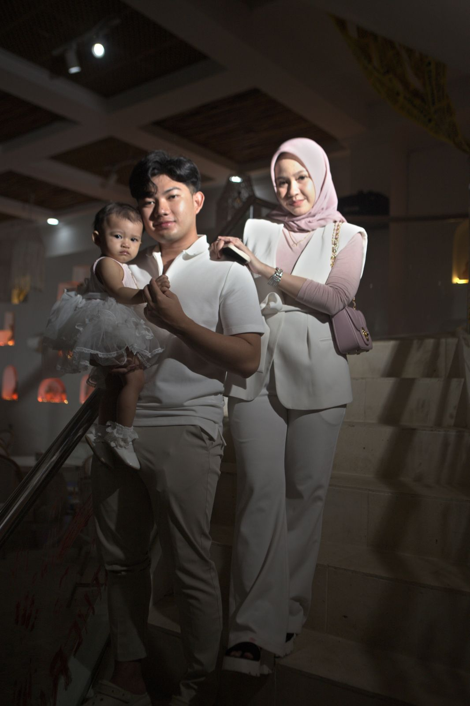

Wedding
Wedding
Fotografi & Videografi · Banjarmasin
Momen berlalu.
Cerita tinggal.
Dari janji seumur hidup hingga langkah pertama sebuah mimpi. Kami mengabadikannya, dengan rasa.
Lebih dari 250 cerita telah kami abadikan.
★★★★★ 4,9/5 dari 120+ ulasan pelanggan
01 / Untuk setiap bab hidup
Semua Paket
Apa yang ingin kamu kenang?
02 / Dari balik lensa
Bukan sekadar gambar.
Bukan sekadar gambar.
Ada cerita di dalamnya.
Rasa yang tulus, cahaya yang natural, dan momen yang tidak dibuat-buat.
Jelajahi Portofolio
Wedding
 Wisuda
Wisuda
Langkah baru, Alya
 Event
Event
Ruang untuk bertumbuh
 Wedding
Wedding
Sebuah janji, Dinda & Fajar
 Event
Event
Malam penuh pertemuan
 Wedding
Wedding
Sampai di sini, bersama
03 / Mengapa kami
Kamu menikmati momen.
Kamu menikmati momen.
Kami menjaga ceritanya.

-
Dekat, bukan dibuat-buat
Kami hadir dengan tenang, sehingga ekspresi yang kamu lihat di foto adalah yang benar-benar terjadi.
-
Sinematik, tetap autentik
Pencahayaan natural dan warna yang hangat, tanpa mengubah suasana aslinya.
-
Profesional dari awal
Dari pemesanan sampai hasil akhir, semuanya jelas, tepat waktu, dan mudah dihubungi.
04 / Empat langkah
Empat langkah menuju
Empat langkah menuju
cerita indah.
01
Pilih layanan
Telusuri katalog dan pilih paket yang paling sesuai dengan acaramu.
02
Ceritakan acaramu
Isi tanggal, lokasi, dan catatan khusus agar kami tahu apa yang kamu butuhkan.
03
Lakukan pembayaran
Bayar DP atau pelunasan, lalu unggah bukti pembayaranmu.
04
Kami siap mengabadikan
Admin menghubungimu lewat WhatsApp, dan kami datang di hari-H.
05 / Kata mereka
Yang tinggal,
Yang tinggal,
bukan cuma foto.
★★★★★ 4,9/5 dari 120+ ulasan
“Kami yang biasanya kaku di depan kamera nyaman banget. Setiap hasilnya terasa seperti kami sedang mengulang hari itu lagi.”
Dinda & Fajar
Wedding · Banjarmasin
Mari mulai bercerita
Pesan Sekarang